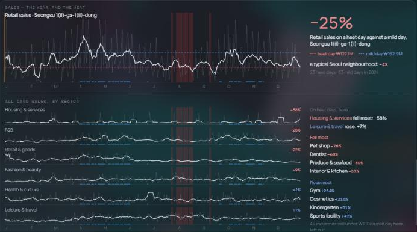

대시보드 그래프 확정안 (2차)
2차 의견을 반영했어요. 패널 안의 글은 실제 앱처럼 영어로 쓰고, 설명은 파란 상자에 한국어로 적었어요. 색은 앱 규칙(증가=빨강 #EE9A7C, 감소=하늘색 #85BCD9) 하나로 통일했어요. 내 동네 강조는 앱의 주황을 그대로 쓰고, 별로라고 하신 두 곳(①의 위치 띠 눈금 → ▲▼ 색, ④ 순위 → 흰색)만 바꿨어요. 예시는 성수1가1동이에요. 대시보드 코드는 아직 그대로예요.
① 요약 숫자
1-a · 로그 표시 · 띠 색 = ▲▼ 색바뀐 점
- 큰 숫자 옆에 작게 log-ratio라고 붙였어요(지도 옆 패널에서 쓰는 표기와 같아요). 아래 줄의 "▼ 25%"가 같은 값을 %로 읽은 거예요.
- 위치 띠의 내 동네 눈금은 노란색 대신 바로 위 ▲▼와 같은 색이에요. 보통 동네보다 낮으면 하늘색, 높으면 빨강이에요. 흰 눈금은 보통 동네(중앙값)이고, 띠 아래 가운데에 그 값을 적었어요.
② 분포 / 관계
A-1 (변수 2개) · C (변수 1개)제곱근 축, 다들 쓰나요?
- 네, 흔히 써요. 한쪽으로 쏠린 데이터를 펼 때 로그 축과 √ 축을 써요. 로그가 더 강하게 펴 주지만 0을 못 그려요. 녹지 비율은 0%인 동네가 많아서 로그 대신 √가 일반적인 선택이에요. ggplot2·D3 같은 대표 차트 도구도 √ 축을 기본 기능으로 갖고 있어요.
- 대신 √ 축이라는 걸 알려야 해요. 눈금 간격이 일정하지 않으니까요(0, 1, 2, 5, 10, 20%). 그래서 축 이름에 "√ scale"을 붙였어요.
- ①에서 로그로 정했으니 y축도 RHSI log-ratio 값으로 맞췄어요. 축과 글은 영어예요.
Relationship
Spread · when one variable is linked
③ 폭염 반응
3-b그래프의 선 3가지
- 점선 2개: 평소(온화한 날) 83일의 평균 매출(하늘색)과 폭염일 23일의 평균 매출(빨강)이에요. 이 둘의 비율이 곧 RHSI예요. 그 사이의 −25%가 RHSI −0.29를 %로 읽은 값이에요.
- 흰 실선: 체감 최고기온을 5°C 구간으로 나눠서, 구간마다 하루 매출의 평균을 이은 선이에요. 더워질수록 매출이 어떻게 움직이는지 보여줘요. 이 동네는 20–25°C에서 가장 높고, 더 더워지면 내려가요.
- 평균과 중앙값 중 무엇을? 평균을 추천해요. RHSI 자체가 "평균 ÷ 평균"으로 정의돼 있어서 점선·흰 선·−25%가 모두 같은 기준이 돼요. 중앙값으로 바꾸면 이 동네는 폭염일 −28%로 나와서, 위의 −25%와 숫자가 달라 헷갈려요. 중앙값의 장점은 세일·명절처럼 튀는 날의 영향을 덜 받는다는 건데, 실제로 구간별 차이는 5–10% 정도이고 선 모양(20–25°C에서 정점)은 같았어요.
Heat response
④ 순위
앱 색 규칙 · 위 줄세우기는 회색 · 내 동네 흰색바뀐 점
위쪽 422곳 줄세우기는 색을 빼고 회색으로 두고, 내 동네만 흰색이에요. 아래 순위표 막대는 앱 규칙대로 옅은 빨강(양수)과 옅은 하늘색(음수)이에요. 내 동네 줄은 주황 막대 대신 흰 막대와 밝은 배경이에요. 참고로 지금 앱 전체가 "선택된 것"에 이 주황(#e8a35c)을 쓰고 있어요(메뉴, 링크 버튼 등). 그래서 대시보드 그래프 안에서만 흰색으로 바꾸는 걸로 생각하고 있어요.
Ranking — RHSI
⑤ 같은 주제 한눈에
패널을 넓고 크게 · 지도끼리 마우스 연동 · 아래에 프로필미니맵 하나씩 확대하는 게 의미가 있을까?
저도 크지 않다고 봐요. 이 패널의 목적은 지도 하나를 자세히 보는 게 아니라 9개를 나란히 놓고 패턴을 비교하는 것이에요. 지도 하나를 자세히 보고 싶으면 그 변수를 연결해서 메인 지도로 보면 되고요. 그래서 개별 확대 대신 두 가지를 바꿨어요.
- 패널을 넓게: 위의 4칸 그리드에서 빼서 아래쪽 넓은 패널(SHAP처럼 한 줄 전체)로 옮기고 지도를 크게 그려요.
- 마우스 연동: 지도 하나에서 동에 마우스를 올리면 9개 지도 모두에서 같은 동이 흰 테두리로 표시되고, 각 지도 아래에 그 동의 값이 나와요. "이 동은 주거지는 많은데 녹지는 적구나"를 바로 비교할 수 있어요. 아래 그림에서 직접 해 보세요.
색은 증가·감소 색(하늘색)과 헷갈리지 않게 청록 계열로 바꿨어요(많을수록 밝아요).
Urban form at a glance
Seongsu 1-ga-1-dong — profile
⑥ 무엇이 폭염 피해를 만드나
위: 워터폴 유지 · 아래: SHAP 공식 스타일 비스웜SHAP 라이브러리 그래프를 그대로 쓸 수는 없나?
- 그대로 가져다 쓰기는 어려워요. SHAP 라이브러리(Python)는 그래프를 정지된 그림(PNG)으로 만들어요. 우리 대시보드는 웹이라서 그 그림을 넣으면 마우스를 올려 동 이름을 보거나 내 동네를 표시하는 게 안 돼요. 422개 동마다 그림을 따로 만들어야 하고요.
- 대신 SHAP 공식 비스웜의 생김새를 그대로 따라 웹으로 다시 그렸어요(아래). 공식 그래프의 규칙은 이래요.
- 그룹 없이 요인을 영향이 큰 순서대로 한 줄씩 놓고, 상위 9개 아래 나머지를 "Sum of 16 other features" 한 줄로 묶어요.
- 가운데 0 세로선, 오른쪽 "Feature value High/Low" 색 막대, 아래 축 이름 "SHAP value"를 둬요.
- 색: 사실 지금 그래프 색은 SHAP 것이 아니라 우리가 만든 색(파랑 → 회색 → 빨강)이에요. SHAP 기본 색은 파랑 → 보라 → 분홍빨강이에요. 아래 버튼으로 둘을 바꿔 볼 수 있어요. 저는 앱의 다른 그래프와 어울리는 우리 색을 추천해요.
- 워터폴은 ①에서 로그로 정한 데 맞춰 값을 log-ratio로 쓰고, 옆에 ≈%를 작게 붙였어요. 로그 기여도는 그대로 더해지기 때문에 이제 근사가 아니라 정확한 값이에요.
Why is this neighbourhood heat-sensitive?
What drives RHSI — SHAP, all neighbourhoods
⑦ 업종별 폭염 영향
지금 그대로 · 색만 앱 규칙으로지금그래프는 그대로 두고, −% 빨강과 +% 파랑을 서로 바꿔서 앱 규칙(감소 = 하늘색)에 맞춰요.

참고한 자료
- ggplot2 scale transformations (√, log, pseudo-log), R-bloggers: 로그·제곱근 변환 (√는 0을 다룰 수 있어요), Tufte forum: √ 축의 장단점, York: 변환의 세기 (√ < log)
- SHAP beeswarm 공식 문서: 정렬 순서, "Sum of other features", 색 막대 규칙